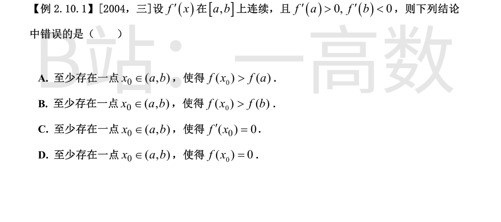
由导数定义：
$$f'(a)=\lim_{x\to a^+}\frac{f(x)-f(a)}{x-a}>0$$
由局部保号性，存在 $\delta>0$，当 $0<x-a<\delta$ 时 $\dfrac{f(x)-f(a)}{x-a}>0$，即 $f(x)>f(a)$，**A 正确**。
同理 $f'(b)=\lim_{x\to b^-}\dfrac{f(x)-f(b)}{x-b}<0$，当 $-\delta<x-b<0$ 时该商小于零，而 $x-b<0$，故 $f(x)>f(b)$，**B 正确**。
$f'$ 在 $[a,b]$ 上连续且 $f'(a)>0>f'(b)$，由介值定理存在 $x_0\in(a,b)$ 使 $f'(x_0)=0$，**C 正确**。
**D 错误**，反例：取 $[a,b]=[0,1]$，$f(x)=1+x-x^2$，则 $f'(0)=1>0$，$f'(1)=-1<0$，但 $f(x)\ge\min\{f(0),f(1)\}=1>0$，$(0,1)$ 内无零点。
故选 **D**。
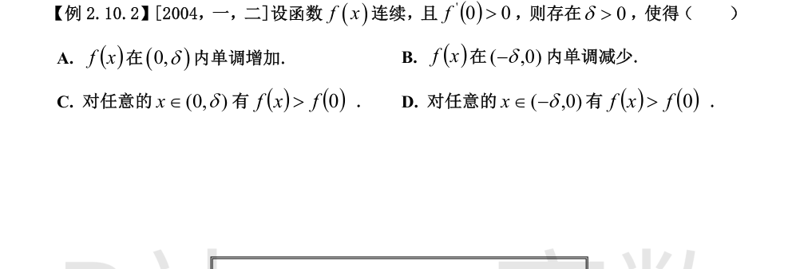
由定义 $f'(0)=\lim_{x\to0}\dfrac{f(x)-f(0)}{x}>0$，由函数极限的局部保号性，存在 $\delta>0$，当 $0<|x|<\delta$ 时
$$\frac{f(x)-f(0)}{x}>0$$
- $x\in(0,\delta)$：$x>0$，故 $f(x)>f(0)$，**C 正确**；
- $x\in(-\delta,0)$：$x<0$，故 $f(x)<f(0)$，**D 错误**（D 断言 $f(x)>f(0)$）。
A、B 错误：一点处导数为正推不出该点某邻域内单调（单调增需区间内导数处处非负）。反例：$f(x)=\dfrac{x}{2}+x^2\sin\dfrac1x\ (x\neq0)$，$f(0)=0$，则 $f'(0)=\dfrac12>0$，但 $f$ 在 $0$ 的任何邻域内都不单调。
故选 **C**。
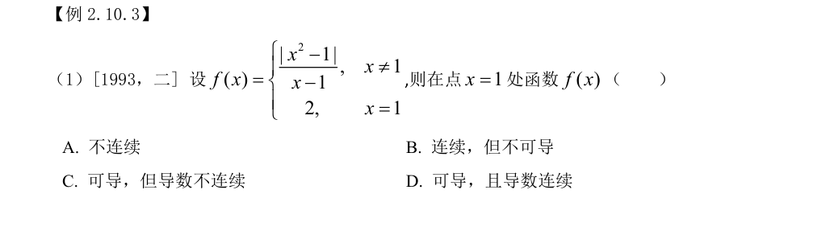
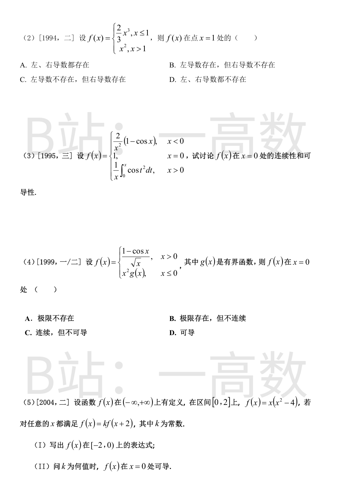
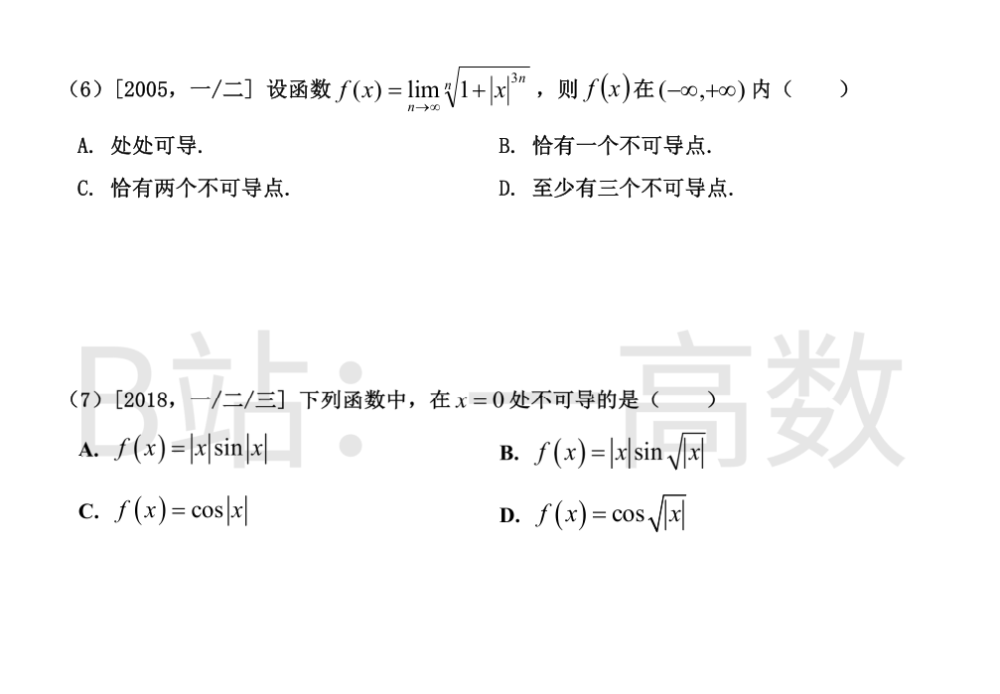
$x\neq1$ 时 $f(x)=\dfrac{|x^2-1|}{x-1}=|x+1|\cdot\dfrac{|x-1|}{x-1}$。
$$\lim_{x\to1^+}f(x)=\lim_{x\to1^+}(x+1)=2,\qquad \lim_{x\to1^-}f(x)=-\lim_{x\to1^-}(x+1)=-2$$
左右极限都存在但不相等，故 $\lim_{x\to1}f(x)$ 不存在，$f$ 在 $x=1$ 处不连续（$x=1$ 为跳跃间断点）。
选 **A**。
$f(1)=\dfrac23$。
$$f'_-(1)=\lim_{h\to0^-}\frac{\frac23(1+h)^3-\frac23}{h}=\frac23\lim_{h\to0^-}\frac{3h+3h^2+h^3}{h}=\frac23\cdot3=2$$
存在。
$$f'_+(1)=\lim_{h\to0^+}\frac{(1+h)^2-\frac23}{h}=\lim_{h\to0^+}\frac{\frac13+2h+h^2}{h}=+\infty$$
不存在。
故左导数存在、右导数不存在，选 **B**。
**连续性**：
$$\lim_{x\to0^-}f(x)=\lim_{x\to0^-}\frac{2(1-\cos x)}{x^2}=2\cdot\frac12=1$$
$$\lim_{x\to0^+}f(x)=\lim_{x\to0^+}\frac1x\int_0^x\cos t^2\,dt=\lim_{x\to0^+}\cos x^2=1\ (\text{洛必达})$$
且 $f(0)=1$，故 $f$ 在 $x=0$ 连续。
**可导性**：利用 $1-\cos x=\dfrac{x^2}{2}-\dfrac{x^4}{24}+O(x^6)$，得 $\dfrac{2(1-\cos x)}{x^2}=1-\dfrac{x^2}{12}+O(x^4)$，于是
$$f'_-(0)=\lim_{x\to0^-}\frac{\frac{2(1-\cos x)}{x^2}-1}{x}=\lim_{x\to0^-}\frac{-\frac{x^2}{12}+O(x^4)}{x}=0$$
$$f'_+(0)=\lim_{x\to0^+}\frac{\frac1x\int_0^x\cos t^2\,dt-1}{x}=\lim_{x\to0^+}\frac{\int_0^x\cos t^2\,dt-x}{x^2}\overset{\text{洛}}{=}\lim_{x\to0^+}\frac{\cos x^2-1}{2x}=\lim_{x\to0^+}\frac{-\frac{x^4}{2}}{2x}=0$$
$f'_-(0)=f'_+(0)=0$，故 $f$ 在 $x=0$ 可导且 $f'(0)=0$。
**结论：$f$ 在 $x=0$ 处既连续又可导，$f'(0)=0$。**
$f(0)=0^2g(0)=0$。
**连续性**：$x\to0^+$ 时 $\dfrac{1-\cos x}{\sqrt x}\sim\dfrac{x^2/2}{x^{1/2}}=\dfrac{\sqrt x}{2}\to0$；$x\to0^-$ 时 $|x^2g(x)|\le Mx^2\to0$（$g$ 有界，$M$ 为其界）。故 $\lim_{x\to0}f(x)=0=f(0)$，连续。
**可导性**：
$$f'_+(0)=\lim_{x\to0^+}\frac{\frac{1-\cos x}{\sqrt x}-0}{x}=\lim_{x\to0^+}\frac{x^2/2}{x^{3/2}}=\lim_{x\to0^+}\frac{\sqrt x}{2}=0$$
$$f'_-(0)=\lim_{x\to0^-}\frac{x^2g(x)-0}{x}=\lim_{x\to0^-}x\,g(x)=0$$
左右导数都存在且相等，$f'(0)=0$，故 $f$ 在 $x=0$ 处可导，选 **D**。
**(I)** $x\in[-2,0)$ 时 $x+2\in[0,2)$，由 $f(x)=k f(x+2)$：
$$f(x)=k(x+2)\left[(x+2)^2-4\right]=k(x+2)\left(x^2+4x\right)=kx(x+2)(x+4)=k(x^3+6x^2+8x)$$
**(II)** $f(0)=0$。
$$f'_-(0)=\lim_{x\to0^-}\frac{k(x^3+6x^2+8x)-0}{x}=\lim_{x\to0^-}k(x^2+6x+8)=8k$$
$$f'_+(0)=\lim_{x\to0^+}\frac{x^3-4x}{x}=\lim_{x\to0^+}(x^2-4)=-4$$
$f$ 在 $x=0$ 可导 $\iff f'_-(0)=f'_+(0)\iff 8k=-4\iff k=-\dfrac12$。（此时两侧 $f(0)=0$，连续性自动满足。）
先求极限：
- $|x|<1$：$|x|^{3n}\to0$，$f(x)=\lim_{n\to\infty}(1+|x|^{3n})^{1/n}=1$；
- $|x|=1$：$f(x)=\lim_{n\to\infty}2^{1/n}=1$；
- $|x|>1$：$f(x)=\lim_{n\to\infty}|x|^3\left(1+|x|^{-3n}\right)^{1/n}=|x|^3$。
故 $f(x)=\begin{cases}1,&|x|\le1\\[2pt] |x|^3,&|x|>1\end{cases}$。
在 $x=1$：$f'_-(1)=0$，$f'_+(1)=3$，不可导；在 $x=-1$：$f'_+(-1)=0$，$f'_-(-1)=\left[(-x)^3\right]'\Big|_{x=-1}=-3x^2\big|_{x=-1}=-3$，不可导。其余点均为初等函数的可导点。
恰有两个不可导点，选 **C**。
**A**：$x>0$ 时 $\dfrac{f(x)}{x}=\dfrac{x\sin x}{x}=\sin x\to0$；$x<0$ 时 $f(x)=(-x)\sin(-x)=x\sin x$，$\dfrac{f(x)}{x}=\sin x\to0$。故 $f'(0)=0$，可导。
**B**：$x>0$ 时 $\dfrac{f(x)}{x}=\sin\sqrt x\to0$；$x<0$ 时 $\dfrac{f(x)}{x}=\dfrac{(-x)\sin\sqrt{-x}}{x}=-\sin\sqrt{-x}\to0$。故 $f'(0)=0$，可导。
**C**：$\cos|x|=\cos x$，处处可导。
**D**：$x>0$：$\dfrac{\cos\sqrt x-1}{x}\sim\dfrac{-x/2}{x}=-\dfrac12$；$x<0$：令 $u=-x>0$，$\dfrac{\cos\sqrt{-x}-1}{x}=\dfrac{\cos\sqrt u-1}{-u}\sim\dfrac{-u/2}{-u}=\dfrac12$。左右导数 $-\dfrac12\neq\dfrac12$，不可导。
选 **D**。
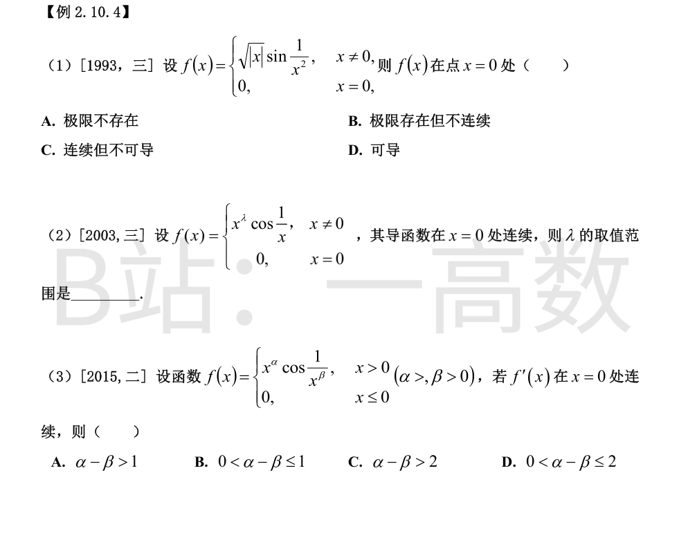
**连续性**：$|f(x)|\le\sqrt{|x|}\to0=f(0)$，故 $f$ 在 $0$ 连续。
**可导性**：$x>0$ 时
$$\frac{f(x)-f(0)}{x}=\frac{\sqrt x\sin(1/x^2)}{x}=\frac{1}{\sqrt x}\sin\frac1{x^2}$$
取 $x_k=\dfrac{1}{\sqrt{2k\pi+\pi/2}}\to0^+$，商 $=\sqrt{2k\pi+\pi/2}\to+\infty$；再取 $x_k'=\dfrac{1}{\sqrt{2k\pi}}\to0^+$，商 $=0$。故极限不存在，$f$ 在 $x=0$ 不可导。
**连续但不可导，选 C。**
**第一步：$f'(0)$ 存在的条件。**
$$f'(0)=\lim_{x\to0}\frac{x^\lambda\cos\frac1x-0}{x}=\lim_{x\to0}x^{\lambda-1}\cos\frac1x$$
含振荡因子 $\cos\frac1x$，极限存在（为 0）$\iff\lambda-1>0\iff\lambda>1$。
**第二步：$x\neq0$ 处求导。**
$$f'(x)=\lambda x^{\lambda-1}\cos\frac1x+x^{\lambda-2}\sin\frac1x$$
**第三步：$f'$ 在 $0$ 连续。** 需 $\lim_{x\to0}f'(x)=f'(0)=0$：第一项 $\to0\iff\lambda>1$；第二项含不衰减的振荡因子 $\sin\frac1x$，需幂次严格为正，即 $\lambda-2>0\iff\lambda>2$。
故 $\lambda$ 的取值范围是 $\lambda>2$。
$x>0$ 时
$$f'(x)=\alpha x^{\alpha-1}\cos\frac1{x^\beta}+\beta x^{\alpha-\beta-1}\sin\frac1{x^\beta},\qquad x<0\ \text{时}\ f'(x)=0$$
先要 $f'(0)$ 存在：
$$f'(0)=\lim_{x\to0^+}\frac{x^\alpha\cos\frac1{x^\beta}-0}{x}=\lim_{x\to0^+}x^{\alpha-1}\cos\frac1{x^\beta}=0\iff\alpha>1$$
再要 $f'$ 在 $0$ 连续，即 $\lim_{x\to0^+}f'(x)=f'(0)=0$：第一项 $\to0\iff\alpha>1$（已满足）；第二项含振荡因子 $\sin\frac1{x^\beta}$（不趋于 0），必须幂次严格为正：$\alpha-\beta-1>0\iff\alpha-\beta>1$。此时左侧 $f'(x)\equiv0\to0$ 也一致。
故条件为 $\alpha-\beta>1$，选 **A**。
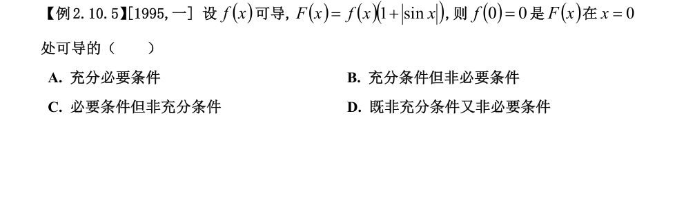
记 $g(x)=f(x)|\sin x|$，则 $F=f+g$，$f$ 可导，故 $F$ 在 0 可导 $\iff g$ 在 0 可导。
**充分性**：设 $f(0)=0$。$g(0)=f(0)\cdot0=0$，
$$\frac{g(x)-g(0)}{x}=\frac{f(x)|\sin x|}{x}=f(x)\cdot\frac{|\sin x|}{x}$$
其中 $f(x)\to f(0)=0$，$\left|\dfrac{|\sin x|}{x}\right|\le1$ 有界，故极限存在（为 0），$g$ 在 0 可导，$F$ 在 0 可导。
**必要性**：设 $F$ 在 0 可导，则 $g=F-f$ 在 0 可导，且 $g(0)=0$：
$$g'(0)=\lim_{x\to0}\frac{f(x)|\sin x|}{x}\ \text{存在}$$
但 $x\to0^+$ 时 $\dfrac{|\sin x|}{x}\to1$，$x\to0^-$ 时 $\dfrac{|\sin x|}{x}\to-1$，故右极限为 $f(0)$、左极限为 $-f(0)$。极限存在 $\iff f(0)=-f(0)\iff f(0)=0$。
所以 $f(0)=0$ 是 $F$ 在 $x=0$ 可导的充分必要条件，选 **A**。
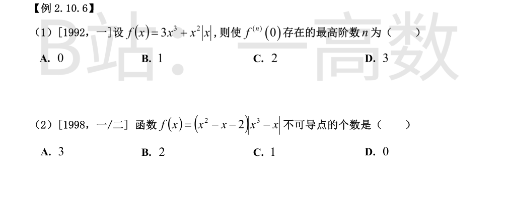
$x^2|x|=\begin{cases}x^3,&x>0\\-x^3,&x<0\end{cases}$，$f(0)=0$。
$$f'(0)=\lim_{x\to0}\frac{x^2|x|}{x}=\lim_{x\to0}|x|=0;\qquad x\neq0\ \text{时}\ f'(x)=9x^2+3x|x|$$
$$f''(0)=\lim_{x\to0}\frac{f'(x)-f'(0)}{x}=\lim_{x\to0}\left(9x+3|x|\right)=0$$
存在；且 $x>0$ 时 $f''(x)=24x$，$x<0$ 时 $f''(x)=12x$（$f''(0)=0$）。
$$\lim_{x\to0^+}\frac{f''(x)-f''(0)}{x}=24,\qquad \lim_{x\to0^-}\frac{f''(x)-f''(0)}{x}=12$$
不等，故 $f'''(0)$ 不存在。最高阶数 $n=2$，选 **C**。
$x^2-x-2=(x-2)(x+1)$，$x^3-x=x(x-1)(x+1)$，故
$$f(x)=(x-2)(x+1)\,|x|\,|x-1|\,|x+1|$$
候选不可导点为 $|\cdot|$ 的零点 $x=0,1,-1$。
- $x=0$：$f=|x|\varphi(x)$，$\varphi(x)=(x-2)(x+1)|x-1||x+1|$ 在 0 附近光滑且 $\varphi(0)=-2\neq0$，故 $f$ 在 0 不可导；
- $x=1$：同理 $\varphi(1)=(1-2)(1+1)\cdot1\cdot2=-4\neq0$，不可导；
- $x=-1$：改写 $f=(x-2)|x||x-1|\cdot(x+1)|x+1|$。因子 $t|t|$ 处处可导（在 $t=0$ 处导数为 0），其余因子在 $-1$ 附近光滑非零，故 $f$ 在 $-1$ 可导。
共 2 个不可导点，选 **B**。
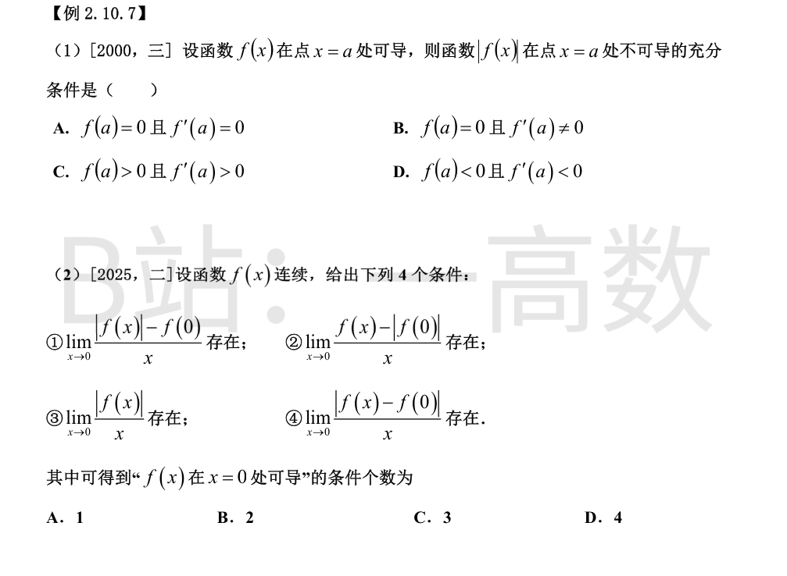
若 $f(a)\neq0$，则 $|\cdot|$ 在 $f(a)$ 的邻域内为光滑函数（$f(a)>0$ 时 $|y|=y$；$f(a)<0$ 时 $|y|=-y$），由复合函数可导性 $|f|$ 在 $a$ 必可导，排除 C、D。
若 $f(a)=0$：
$$\left(|f|\right)'_+(a)=\lim_{x\to a^+}\frac{|f(x)|-0}{x-a}=\lim_{x\to a^+}\left|\frac{f(x)-f(a)}{x-a}\right|=|f'(a)|$$
$$\left(|f|\right)'_-(a)=\lim_{x\to a^-}\frac{|f(x)|}{x-a}=-\lim_{x\to a^-}\left|\frac{f(x)-f(a)}{x-a}\right|=-|f'(a)|$$
故 $|f|$ 在 $a$ 可导 $\iff|f'(a)|=0\iff f'(a)=0$；当 $f'(a)\neq0$ 时左右导数为 $\pm|f'(a)|$，不可导。
所以充分条件为 $f(a)=0$ 且 $f'(a)\neq0$，选 **B**。
各极限均指有限极限；$f$ 连续是关键条件。
**①** 记 $\lim_{x\to0}\dfrac{|f(x)|-f(0)}{x}=L$，则 $|f(x)|-f(0)=x\cdot\dfrac{|f(x)|-f(0)}{x}\to0$，故 $|f(x)|\to f(0)$，结合 $|f(x)|\ge0$ 得 $f(0)\ge0$，再由 $f$ 连续得 $f(x)\to f(0)$。
- 若 $f(0)>0$：由连续性，$x$ 充分小时 $f(x)>f(0)/2>0$，故 $|f(x)|=f(x)$，于是 $\dfrac{f(x)-f(0)}{x}=\dfrac{|f(x)|-f(0)}{x}\to L$，$f'(0)=L$ 存在；
- 若 $f(0)=0$：$\dfrac{|f(x)|}{x}\to L$，右侧 $\Rightarrow L\ge0$，左侧 $\Rightarrow L\le0$，故 $L=0$，于是 $\left|\dfrac{f(x)}{x}\right|=\dfrac{|f(x)|}{|x|}\to0$，$f'(0)=0$ 存在。
**① 可得。**
**②** 记 $\lim_{x\to0}\dfrac{f(x)-|f(0)|}{x}=L$，则 $f(x)=|f(0)|+o(1)\to|f(0)|$；又由连续性 $f(x)\to f(0)$，故 $f(0)=|f(0)|$。于是
$$\frac{f(x)-f(0)}{x}=\frac{f(x)-|f(0)|}{x}\to L$$
$f'(0)=L$ 存在。**② 可得。**
**③** 记 $\lim_{x\to0}\dfrac{|f(x)|}{x}=L$：右侧 $\Rightarrow L\ge0$，左侧 $\Rightarrow L\le0$，故 $L=0$，且 $|f(x)|=|x|\cdot o(1)\to0$。由连续性 $f(0)=\lim f(x)=0$。于是
$$\left|\frac{f(x)-f(0)}{x}\right|=\frac{|f(x)|}{|x|}\to0,\qquad f'(0)=0\ \text{存在}$$
**③ 可得。**
**④** 同理 $\lim_{x\to0}\dfrac{|f(x)-f(0)|}{x}=L$，右侧 $L\ge0$、左侧 $L\le0\Rightarrow L=0$，故 $\left|\dfrac{f(x)-f(0)}{x}\right|=\dfrac{|f(x)-f(0)|}{|x|}\to0$，$f'(0)=0$ 存在。**④ 可得。**
四个条件均可推出 $f$ 在 $x=0$ 可导，个数为 4，选 **D**。
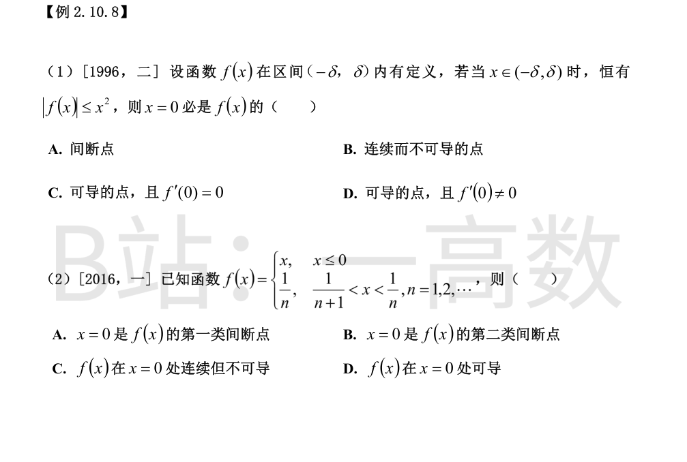
由 $|f(0)|\le0$ 得 $f(0)=0$。对 $x\neq0$：
$$\left|\frac{f(x)-f(0)}{x}\right|=\frac{|f(x)|}{|x|}\le\frac{x^2}{|x|}=|x|\to0$$
由夹逼准则 $f'(0)=\lim_{x\to0}\dfrac{f(x)-f(0)}{x}=0$ 存在。
故 $x=0$ 是可导的点且 $f'(0)=0$，选 **C**。
**连续性**：$x\to0^-$ 时 $f(x)=x\to0=f(0)$；$x\to0^+$ 时设 $x\in\left(\dfrac1{n+1},\dfrac1n\right]$，则 $f(x)=\dfrac1n\to0$。故 $f$ 在 $0$ 连续。
**可导性**：左导数 $\lim_{x\to0^-}\dfrac{f(x)-f(0)}{x}=1$。右导数：当 $x\in\left(\dfrac1{n+1},\dfrac1n\right]$ 时 $n\le\dfrac1x<n+1$，
$$1=\frac{1/n}{1/n}\le\frac{f(x)}{x}=\frac{1}{nx}<\frac{1/n}{1/(n+1)}=1+\frac1n$$
由夹逼准则 $\lim_{x\to0^+}\dfrac{f(x)}{x}=1$。
故 $f'(0)=1$ 存在，选 **D**。
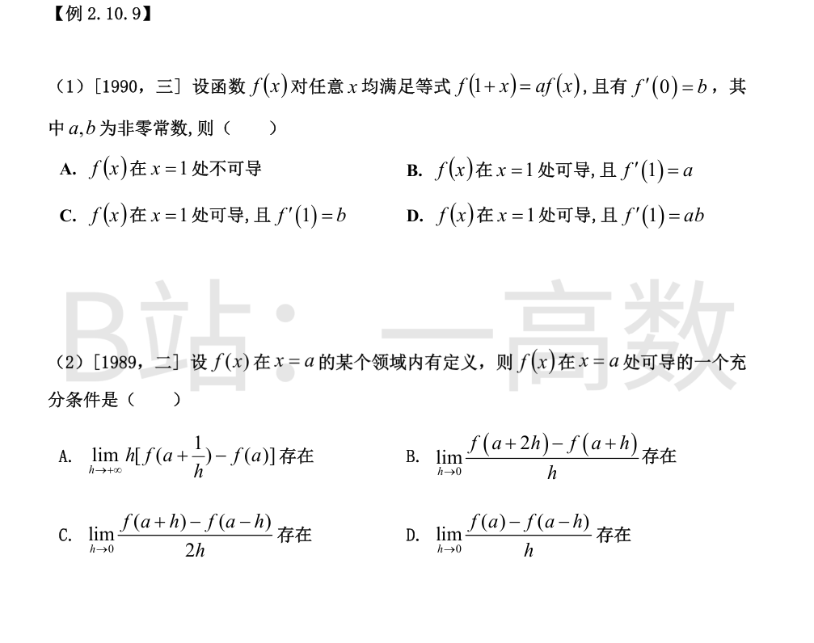
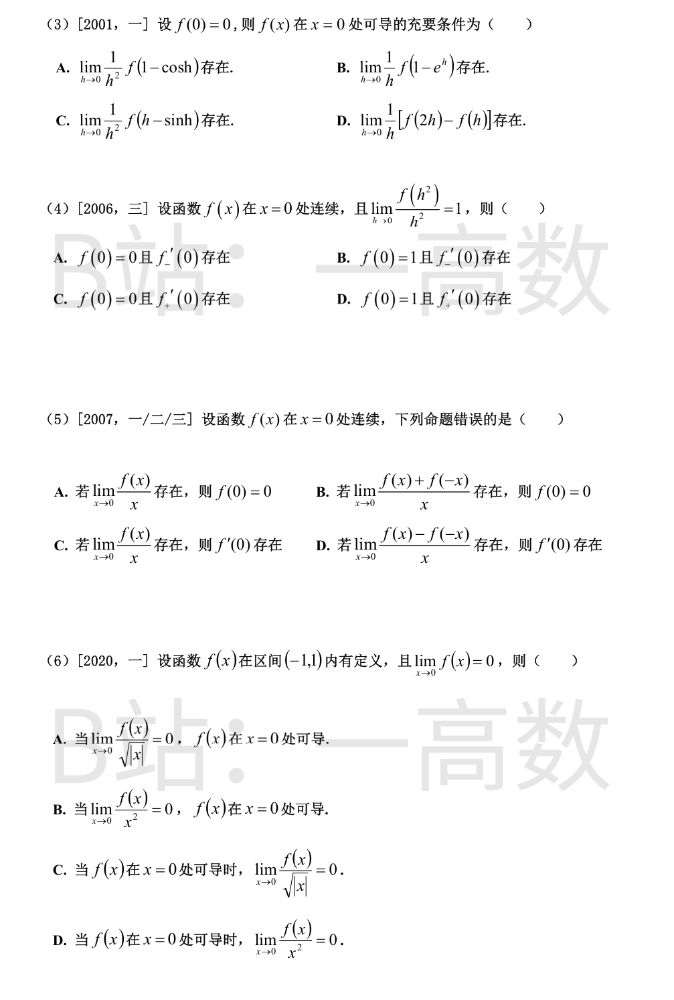
取 $x=0$ 得 $f(1)=af(0)$。
$$f'(1)=\lim_{h\to0}\frac{f(1+h)-f(1)}{h}=\lim_{h\to0}\frac{af(h)-af(0)}{h}=a\lim_{h\to0}\frac{f(h)-f(0)}{h}=af'(0)=ab$$
故 $f$ 在 $x=1$ 可导且 $f'(1)=ab$，选 **D**。
**A**：令 $t=\dfrac1h\to0^+$，极限即 $\lim_{t\to0^+}\dfrac{f(a+t)-f(a)}{t}$，只是右导数存在，不充分。
**B**：不含 $f(a)$。反例：$f(a)=0$，$f(x)=1\ (x\neq a)$，则 $\dfrac{f(a+2h)-f(a+h)}{h}\equiv0$ 存在，但 $f$ 在 $a$ 不连续，更不可导。
**C**：对称差商。反例：$f(x)=|x-a|$，$\dfrac{|h|-|-h|}{2h}\equiv0$ 存在，但 $f$ 在 $a$ 不可导。
**D**：令 $t=-h$：
$$\lim_{h\to0}\frac{f(a)-f(a-h)}{h}=\lim_{t\to0}\frac{f(a+t)-f(a)}{t}$$
正是导数定义，故充分。
选 **D**。
**A**：$u=1-\cos h\ge0$ 只从右侧趋于 0，只提供右导数信息。反例 $f(x)=|x|$：$\dfrac{1-\cos h}{h^2}\to\dfrac12$ 存在，但 $f'(0)$ 不存在。（$f$ 可导时该极限 $=\dfrac{f'(0)}{2}$，故只必要不充分。）
**B**：$u=1-e^h\sim-h$ 随 $h$ 变号，覆盖 $0$ 的两侧，且
$$\frac{f(1-e^h)}{h}=\frac{f(u)-f(0)}{u}\cdot\frac{1-e^h}{h},\qquad \frac{1-e^h}{h}\to-1$$
若 $f'(0)$ 存在，上式 $\to-f'(0)$，极限存在；反之若极限存在为 $L$，则 $\dfrac{f(u)-f(0)}{u}=\dfrac{f(1-e^h)}{h}\cdot\dfrac{h}{1-e^h}\to-L$ 对 $u\to0$ 的两侧均成立，即 $f'(0)=-L$ 存在。充要！
**C**：$u=h-\sin h\sim\dfrac{h^3}{6}$，$\dfrac{u}{h^2}\sim\dfrac h6\to0$，会吸收掉信息。反例 $f(x)=\sqrt{|x|}$：$\dfrac{f(h-\sin h)}{h^2}\sim\dfrac{\sqrt{h^3/6}}{h^2}=\dfrac{1}{\sqrt6\,\sqrt h}\to0$ 存在，但 $f$ 在 0 不可导。（只必要不充分：$f$ 可导时极限 $=f'(0)\cdot0=0$。）
**D**：不含 $f(0)$。反例：$f(0)=1$，$f(x)=0\ (x\neq0)$：极限为 0 存在，但 $f$ 不连续更不可导。（也不必要：$f(x)=|x|$ 时 $\dfrac{f(2h)-f(h)}{h}=\dfrac{|h|}{h}$ 不存在。）
选 **B**。
由 $f$ 在 0 连续：$f(h^2)\to f(0)$；又 $f(h^2)\sim h^2\to0$，故 $f(0)=0$。
右导数（令 $x=h^2>0$）：
$$f'_+(0)=\lim_{x\to0^+}\frac{f(x)-f(0)}{x}=\lim_{h\to0}\frac{f(h^2)}{h^2}=1$$
存在。但条件只涉及 $h^2>0$ 即右侧的 $f$ 值，对 $x<0$ 一侧无任何信息，不能断定 $f'(0)$ 或 $f'_-(0)$ 存在。
故 $f(0)=0$ 且 $f'_+(0)$ 存在，选 **C**。
**A 正确**：$f(x)=x\cdot\dfrac{f(x)}{x}\to0$，由连续性 $f(0)=0$。
**B 正确**：$g(x)=f(x)+f(-x)$ 连续，$\lim\dfrac{g(x)}{x}$ 存在 $\Rightarrow g(x)\to0\Rightarrow g(0)=2f(0)=0$，即 $f(0)=0$。
**C 正确**：由 A 得 $f(0)=0$，于是 $f'(0)=\lim_{x\to0}\dfrac{f(x)-f(0)}{x}=\lim_{x\to0}\dfrac{f(x)}{x}$ 存在。
**D 错误**：这是对称差商，不含 $f(0)$ 的信息。反例：$f(x)=|x|$ 在 0 连续，$\dfrac{f(x)-f(-x)}{x}\equiv0$ 存在，但 $f'(0)$ 不存在。
错误的命题是 **D**。
关键：条件只给 $\lim_{x\to0}f(x)=0$，**未设 $f(0)=0$**。
**A 错误**：取 $f(0)=1$，$f(x)=x^2\ (x\neq0)$：$\lim\dfrac{f(x)}{\sqrt{|x|}}=0$，但 $f$ 在 0 不连续，不可导；即使 $f(0)=0$，取 $f(x)=|x|^{3/4}$：$\dfrac{f(x)}{\sqrt{|x|}}=|x|^{1/4}\to0$，但 $\dfrac{f(x)}{x}=\pm|x|^{-1/4}\to\infty$，不可导。
**B 错误**：取 $f(0)=1$，$f(x)=x^3\ (x\neq0)$：$\lim\dfrac{f(x)}{x^2}=\lim x=0$，但 $\dfrac{f(x)-f(0)}{x}=\dfrac{x^3-1}{x}\to\infty$，不可导。
**C 正确**：可导 $\Rightarrow$ 连续 $\Rightarrow f(0)=\lim_{x\to0}f(x)=0$，于是
$$\frac{f(x)}{\sqrt{|x|}}=\frac{f(x)-f(0)}{x}\cdot\frac{x}{\sqrt{|x|}},\qquad \left|\frac{x}{\sqrt{|x|}}\right|=\sqrt{|x|}\to0$$
故极限为 $f'(0)\cdot0=0$。
**D 错误**：$f(x)=x$ 可导（且 $f(0)=0$），但 $\dfrac{f(x)}{x^2}=\dfrac1x\to\infty\neq0$。
选 **C**。
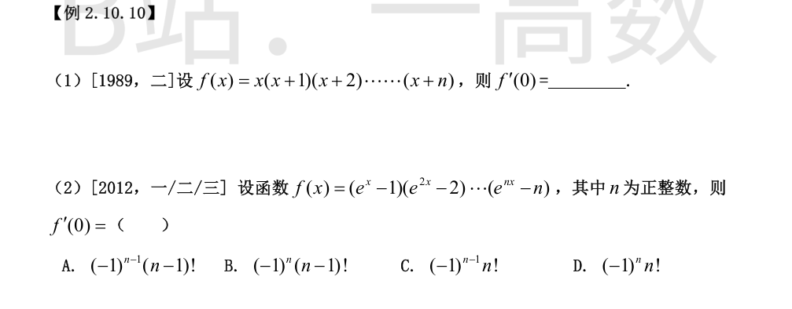
记 $g(x)=(x+1)(x+2)\cdots(x+n)$，则 $f(x)=x\,g(x)$，$g$ 为多项式。由乘积求导（只有因子 $x$ 求导项在 $x=0$ 处非零）：
$$f'(0)=g(0)+0\cdot g'(0)=g(0)=1\cdot2\cdots n=n!$$
或用定义：$f'(0)=\lim_{x\to0}\dfrac{xg(x)-0}{x}=g(0)=n!$。
$n$ 个因子中只有 $e^x-1$ 在 $x=0$ 处为零，其余因子 $e^{kx}-k$（$k\ge2$）在 $x=0$ 处值为 $1-k\neq0$。由乘积求导法则，只有对第一个因子求导的项在 $x=0$ 处非零：
$$f'(0)=\left[(e^x-1)'\right]_{x=0}\prod_{k=2}^{n}(1-k)=1\cdot(-1)(-2)\cdots\bigl(-(n-1)\bigr)=(-1)^{n-1}(n-1)!$$
选 **A**。
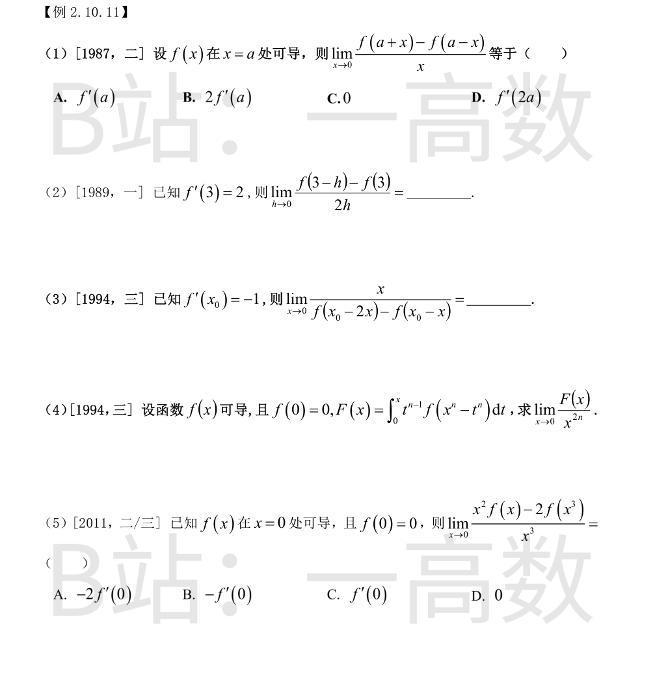
$$\frac{f(a+x)-f(a-x)}{x}=\underbrace{\frac{f(a+x)-f(a)}{x}}_{\to\ f'(a)}-\underbrace{\frac{f(a-x)-f(a)}{x}}_{\to\ -f'(a)}$$
其中第二项：令 $t=-x$，$\dfrac{f(a-x)-f(a)}{x}=\dfrac{f(a+t)-f(a)}{-t}\to-f'(a)$。
故原极限 $=f'(a)-(-f'(a))=2f'(a)$，选 **B**。
$$\lim_{h\to0}\frac{f(3-h)-f(3)}{2h}=\lim_{h\to0}\left[-\frac12\cdot\frac{f(3+(-h))-f(3)}{-h}\right]=- rac12 f'(3)=-\frac12\times2=-1$$
先算分母与 $x$ 之比的极限：
$$\frac{f(x_0-2x)-f(x_0-x)}{x}=-2\cdot\frac{f(x_0-2x)-f(x_0)}{-2x}+\frac{f(x_0-x)-f(x_0)}{-x}\to-2f'(x_0)+f'(x_0)=-f'(x_0)=1$$
由倒数法则：
$$\lim_{x\to0}\frac{x}{f(x_0-2x)-f(x_0-x)}=\frac{1}{1}=1$$
换元 $u=x^n-t^n$，则 $t^{n-1}dt=-\dfrac1n du$；$t:0\to x$ 对应 $u:x^n\to0$：
$$F(x)=\frac1n\int_0^{x^n}f(u)\,du$$
由 $f(0)=0$ 且 $f$ 连续，分子分母均 $\to0$，洛必达：
$$\lim_{x\to0}\frac{F(x)}{x^{2n}}=\lim_{x\to0}\frac{\frac1n\cdot n x^{n-1}f(x^n)}{2n\,x^{2n-1}}=\lim_{x\to0}\frac{f(x^n)}{2n\,x^n}=\frac{1}{2n}\lim_{x\to0}\frac{f(x^n)-f(0)}{x^n}=\frac{f'(0)}{2n}$$
$$\frac{x^2f(x)-2f(x^3)}{x^3}=\frac{f(x)}{x}-2\cdot\frac{f(x^3)}{x^3}$$
由 $f(0)=0$：$\lim_{x\to0}\dfrac{f(x)}{x}=\lim_{x\to0}\dfrac{f(x)-f(0)}{x}=f'(0)$；令 $u=x^3$：$\lim_{x\to0}\dfrac{f(x^3)}{x^3}=\lim_{u\to0}\dfrac{f(u)-f(0)}{u}=f'(0)$。
故原式 $=f'(0)-2f'(0)=-f'(0)$，选 **B**。
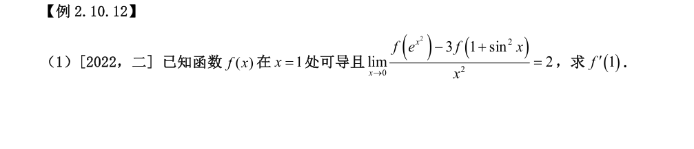
由 $f$ 在 $x=1$ 可导：$f(1+u)=f(1)+f'(1)u+o(u)\ (u\to0)$。又 $e^{x^2}-1=x^2+o(x^2)$，$\sin^2x=x^2+o(x^2)$，故
$$f(e^{x^2})=f(1)+f'(1)x^2+o(x^2),\qquad f(1+\sin^2x)=f(1)+f'(1)x^2+o(x^2)$$
代入：
$$\frac{f(e^{x^2})-3f(1+\sin^2x)}{x^2}=\frac{-2f(1)}{x^2}-2f'(1)+o(1)$$
极限存在（等于 2）要求发散项消失：$f(1)=0$，进而 $-2f'(1)=2$，即
$$f'(1)=-1$$